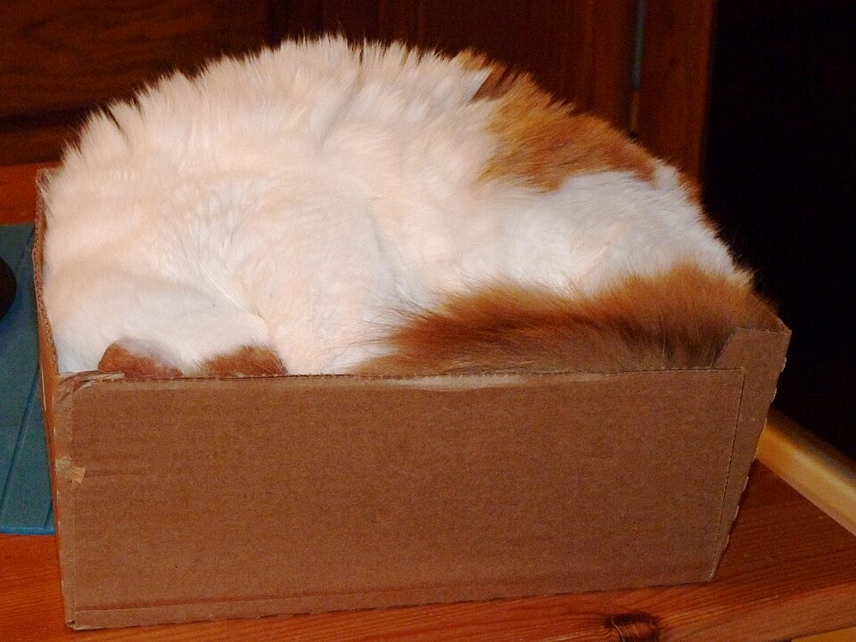

貓咪的紙箱小宇宙
貓咪為什麼
喜歡躲紙箱？
包裹拆完了，
紙箱卻多了一位住客。
不必養貓，也可以一起好奇。

先猜猜看
如果要選一個目前較有研究支持的說法……
點選一個答案，看看研究能回答到哪裡。
冷知識 01
紙箱可以是一個退開的小角落
23 隻
2019 年荷蘭一所收容所的新入所貓
研究隨機分成有箱組與無箱組，觀察最初 12 天。
有箱組的平均行為壓力評分下降較快。這支持了躲藏空間在這種陌生環境中的作用。
研究觀察姿勢與行為，沒有直接測量貓「心裡有多快樂」。
常見解釋，證據不同
「暖暖的」與「方便埋伏」呢？
紙板有隔熱作用，所以貓喜歡紙箱？
Cats Protection 的科普文章提出保暖解釋，但這批資料沒有直接驗證「保暖促使家貓選擇紙箱」。這仍是可能解釋。
躲起來，是為了突然撲出來？
文章中的撲擊例子談的是圈養大型貓科動物。這個類比還不能證明家貓進紙箱的原因。
有趣的解釋，可以先保留問號。
冷知識 03
沒有箱壁，只有方形輪廓呢？
2021 年研究請飼主在家擺放方形、
錯覺方形與對照圖案，記錄貓的反應。
研究記錄貓是否四肢進入圖案，並站立或坐至少三秒。錯覺方形與對照的比較呈現差異，但樣本少、參與流失多，解讀需要保留限制。
平面方框，也能成為研究問題。
這是視覺反應的案例，還不能解釋立體紙箱的保暖或遮蔽效果。
繼續挖冷知識
五篇資料，一份可以繼續長大的 Wiki
可用鍵盤左右方向鍵切換